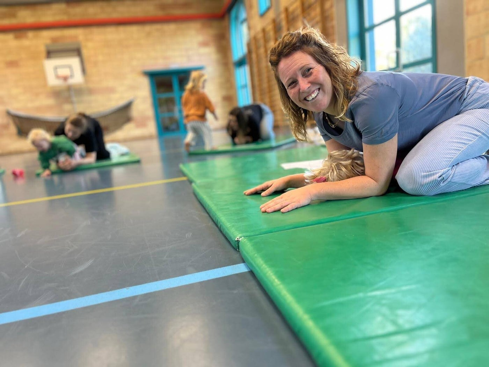
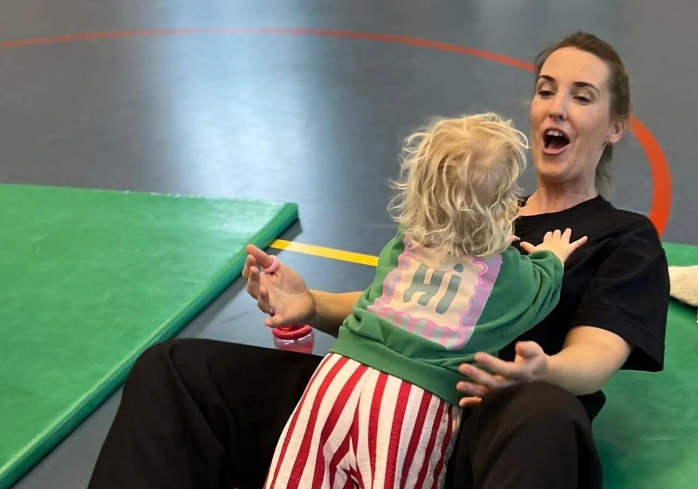
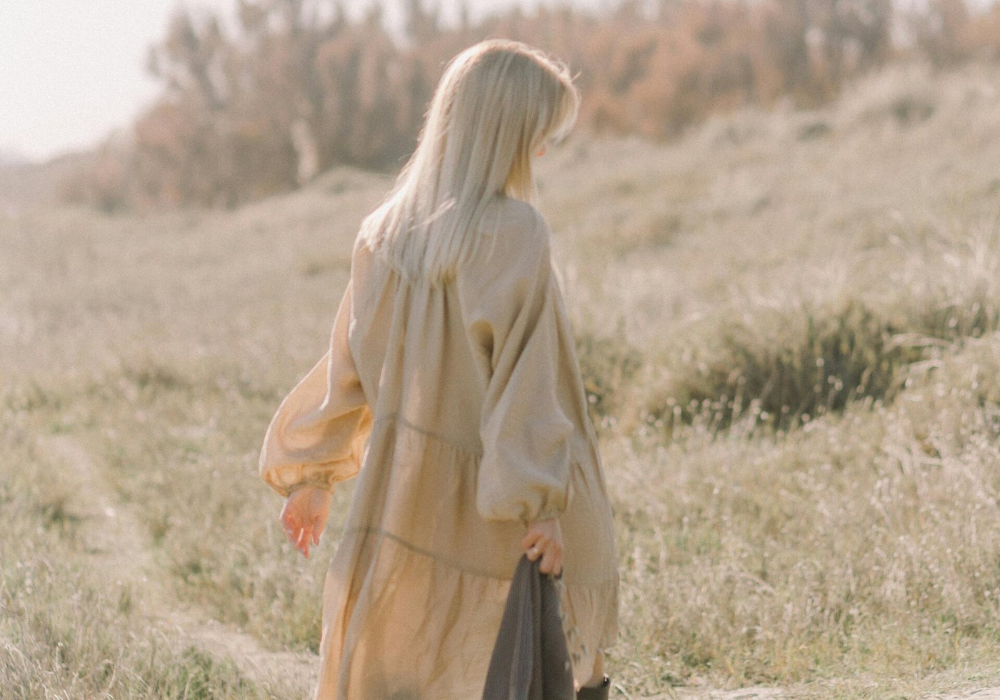
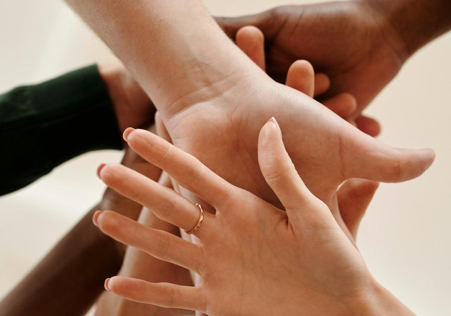
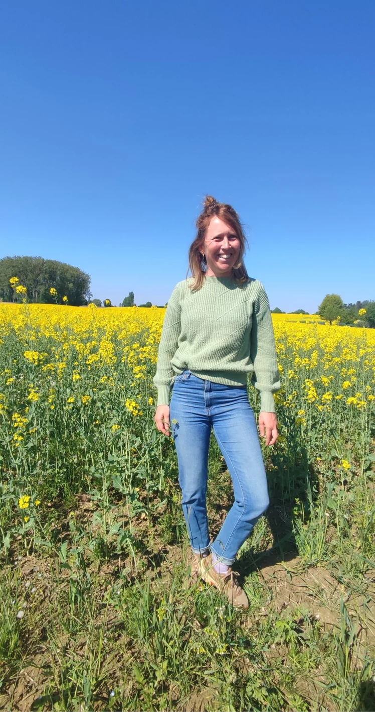

Welkom bij Sprankel
Thuiskomen bij jezelf.
Een plek waar je mag vertragen, bewegen en thuiskomen bij jezelf. Want de mooiste sprankels ontstaan wanneer je opnieuw in verbinding komt met wie je werkelijk bent.
Verlang je ernaar om even uit de drukte van het dagelijkse leven te stappen?
Misschien verlang je ernaar om opnieuw écht aanwezig te zijn in het moment, meer rust te voelen in je lichaam en weer in verbinding te komen met jezelf of je kind. Of misschien heb je gewoon nood aan wat meer ruimte voor speelsheid, verwondering en plezier.
Dan heet ik je van harte welkom bij Sprankel.
Sprankel is een warme plek waar je mag vertragen, bewegen en voelen. Niet omdat er iets aan jou veranderd moet worden, maar omdat ik geloof dat we allemaal nood hebben aan momenten waarop we even mogen landen, kunnen ademen en opnieuw thuiskomen bij onszelf.
Of je nu deelneemt aan een workshop, kiest voor individuele begeleiding of op een andere manier met Sprankel kennismaakt, mijn uitnodiging blijft dezelfde: om opnieuw te ontdekken wat jij nodig hebt, meer verbinding te voelen met jezelf en anderen en ruimte te maken voor datgene wat jou doet lachen, bewegen en leven.
Wat mag je bij Sprankel ervaren?
Bij Sprankel nodig ik je uit om bewust te vertragen, zodat er opnieuw ruimte ontstaat om te voelen wat er in je leeft en wat je nodig hebt. Vanuit die verbinding met jezelf kan er ook meer verbinding ontstaan met de mensen rondom jou.
En misschien ontstaat er onderweg opnieuw ruimte voor iets wat soms wat naar de achtergrond is verdwenen: jouw eigen sprankel.
Voelen
Je lichaam vertelt je vaak al meer dan je denkt. Het geeft signalen wanneer iets te veel wordt, wanneer je rust nodig hebt of wanneer iets juist goed voelt. Door opnieuw te leren luisteren naar wat je lichaam je vertelt, kun je meer in contact komen met wat er in je leeft en ontdekken wat je op dat moment nodig hebt. Zo ontstaat er stap voor stap meer ruimte voor rust, helderheid en zorg voor jezelf.
Bij Sprankel nodig ik je uit om opnieuw stil te staan bij de signalen van je lichaam. Via beweging, lichaamsgerichte oefeningen en bewustwording ontdek je wat je voelt, waar je grenzen liggen en wat jou deugd doet. Zonder iets te moeten veranderen of oplossen, maar met aandacht voor wat er op dat moment bij jou leeft.
Vertragen
Wanneer je bewust vertraagt, geef je jezelf de kans om even uit de drukte van alledag te stappen. Er ontstaat ruimte om te ademen, te voelen en opnieuw aanwezig te zijn in het moment. Door niet voortdurend van het ene naar het andere te gaan, kun je opnieuw stilstaan bij wat jij nodig hebt en bewustere keuzes maken die beter aansluiten bij jezelf.
Bij Sprankel creëer ik momenten waarop je even niets hoeft te bereiken of te bewijzen. Via zachte beweging, ademhaling, ontspanning en momenten van stilte mag je uit de dagelijkse stroom stappen en opnieuw voelen wat je nodig hebt. Je hoeft niet alles los te laten of meteen tot rust te komen. Je mag gewoon beginnen bij waar je op dat moment bent.
Spelen
Spelen brengt je op een heel natuurlijke manier terug naar het hier en nu. Denk maar aan hoe je als kind kon opgaan in een spel, kon lachen zonder na te denken en helemaal aanwezig kon zijn in wat je op dat moment aan het beleven was. Die speelsheid en zorgeloosheid raken we soms wat kwijt wanneer het leven vooral bestaat uit verwachtingen, verantwoordelijkheden en alles wat er nog moet gebeuren.
Bij Sprankel wil ik je uitnodigen om opnieuw contact te maken met die speelsheid en vrolijkheid. Niet omdat we opnieuw kinderen moeten worden, maar omdat spelen, bewegen en plezier maken ons eraan kunnen herinneren dat we niet alleen door het leven hoeven te gaan, maar het ook werkelijk mogen beleven.
Verbinden
Wanneer je opnieuw meer in verbinding komt met jezelf, ontstaat er vaak ook meer ruimte om anderen echt te ontmoeten. Dat kan je kind zijn, een andere vrouw of een hele groep mensen die samenkomt. Door samen te bewegen, te spelen, te vertragen of gewoon een fijne tijd te beleven, kan er verbinding ontstaan zonder dat daar altijd veel woorden voor nodig zijn.
Bij Sprankel mag die verbinding er zijn met aandacht, zachtheid en plezier, maar ook gewoon door samen te lachen, iets te beleven en aanwezig te zijn bij elkaar.
Voor wie is Sprankel?
Sprankel is er voor mensen die bewust tijd willen maken voor zichzelf, voor elkaar en voor wat hen opnieuw dichter bij zichzelf brengt. Soms betekent dat vertragen en tot rust komen. Op andere momenten betekent het net bewegen, spelen, lachen en helemaal opgaan in het moment.
Of je nu alleen komt, samen met je kind of vanuit een organisatie, bij Sprankel krijg je de ruimte om even uit de dagelijkse drukte te stappen en iets te beleven dat deugd doet.

Voor ouders & kinderen
Sprankel is er voor ouders en kinderen die samen een fijne tijd willen beleven en elkaar op een andere manier willen ontmoeten. Door samen te spelen, te bewegen, te lachen en te verwonderen, ontstaat er ruimte om even los te komen van de dagelijkse drukte en gewoon samen aanwezig te zijn.
Het gaat niet alleen om verbinding maken, maar ook om plezier beleven, mooie herinneringen creëren en opnieuw ontdekken hoeveel er kan ontstaan wanneer je samen de tijd neemt.

Voor vrouwen
Sprankel is er voor vrouwen die verlangen naar een moment waarop ze even niet hoeven te zorgen, te regelen of van het ene naar het andere taakje te gaan. Een moment waarop ze opnieuw mogen bewegen, voelen, lachen en ontdekken wat zij op dat moment nodig hebben.
Via beweging, spel, vertraging en lichaamsbewustwording nodig ik je uit om opnieuw meer in contact te komen met jezelf en ruimte te maken voor de vrouw die je bent, los van alle verwachtingen die je misschien dagelijks met je meedraagt.

Voor organisaties
Sprankel werkt samen met organisaties die ruimte willen maken voor verbinding, regulatie, beweging en lichaamsbewustwording binnen hun werking.
Via workshops creëer ik ervaringsgerichte momenten waarin mensen niet alleen luisteren of praten, maar ook letterlijk in beweging komen.
Samen bekijken we wat past bij jullie groep, doelgroep of organisatie en kan er een workshop of samenwerking op maat ontstaan.
Hallo, ik ben Sarah
Ik ben Sarah en ik creëer graag momenten waarop mensen opnieuw meer in verbinding kunnen komen met zichzelf én met elkaar. Via beweging, spel, vertraging en bewustwording nodig ik je uit om te voelen wat je nodig hebt, meer rust te ervaren en opnieuw ruimte te maken voor plezier en lichtheid.
Mijn eigen ervaring met burn-out en het opnieuw leren luisteren naar mijn lichaam heeft mij daarin veel geleerd. Het liet me ervaren hoe gemakkelijk je jezelf onderweg kunt kwijtraken, maar ook hoe waardevol het is om opnieuw te ontdekken wat jou energie geeft en helpt om je weer jezelf te voelen.
Daarnaast heb ik jarenlang gewerkt met kinderen, jongeren en ouders. Vanuit mijn achtergrond in dans- en bewegingstherapie heb ik telkens opnieuw ervaren hoe bijzonder het is wanneer een ouder en kind elkaar op een andere manier kunnen ontmoeten. Soms zijn woorden daarvoor niet nodig. Door samen te bewegen, te spelen en plezier te maken, kan er ruimte ontstaan voor verbinding, ontspanning en gewoon samen zijn.
Met Sprankel breng ik die verschillende ervaringen samen. Ik wil een stukje met je meelopen of een moment voor je creëren waarin je mag vertragen, bewegen, spelen, lachen en opnieuw ontdekken wat jou of jullie deugd doet.

Hoe kan je met Sprankel op weg?
Bij Sprankel kun je op verschillende manieren kennismaken en ervaren wat beweging, vertraging en verbinding voor jou kunnen betekenen.
Je kunt aansluiten bij een workshop, kiezen voor persoonlijke begeleiding of samen met anderen op weg gaan in een groepstraject.
Workshops
Heb je zin om even uit de dagelijkse rush te stappen en tijd te maken voor wat echt deugd doet? In de workshops van Sprankel nodig ik je uit om te bewegen, te spelen, te vertragen en opnieuw helemaal aanwezig te zijn in het moment. Je kunt alleen deelnemen en jezelf een moment van plezier, ontspanning en verbinding gunnen, maar je kunt ook samen met je kind komen en bewust tijd maken voor elkaar.
Persoonlijke begeleiding
Misschien voel je dat je door je gevoeligheid sneller uit balans raakt, veel prikkels opvangt of moeite hebt om te voelen wat jij zelf nodig hebt. Tijdens een persoonlijke begeleiding gaan we samen op zoek naar meer rust, balans en concrete handvatten die bij jou passen.
We vertrekken vanuit jouw verhaal en kijken naar wat jou energie kost en wat jou net energie geeft. Daarbij kunnen we werken met gesprek, beweging, paardencoaching en lichaamsbewustzijn. Er is ook ruimte voor energetisch werk, zoals Reiki.
Groepstrajecten
Misschien heb je zin om gedurende een bepaalde periode samen met anderen rond een thema op weg te gaan. Dat kan een week zijn waarin we samen vertragen, bewegen, verbinden en genieten, maar evengoed een traject waarin we over verschillende momenten samenkomen en theorie, praktijk en ervaring met elkaar verbinden.
Of het nu gaat over dans en beweging, regulatie, hoogsensitiviteit of een ander thema dat mensen samenbrengt: er ontstaat ruimte om niet alleen te luisteren, maar vooral ook zelf te ervaren, te ontdekken en in beweging te komen.
Gratis inspiratie
Wil je eerst even kennismaken met Sprankel of ben je gewoon op zoek naar een klein moment van inspiratie voor thuis?
Via mijn gratis filmpjes en oefeningen nodig ik je uit om zelf aan de slag te gaan.
Je vindt er onder andere ouder-kindoefeningen die jullie kunnen helpen om samen te bewegen, spelen en verbinden.
Wat anderen vertellen
De lieve, begripvolle aanpak van Sarah en het snel switchen tussen activiteiten naargelang de noden van de kindjes was echt een meerwaarde aan de sessies. M. ontdooit niet snel en toont meestal alleen haar energieke zelve in haar naaste omgeving thuis, in de opvang en bij familie. Het was snel duidelijk dat zij zichzelf kon en mocht zijn en dit voelde zij zelf ook meteen aan. Fantastisch om haar zo enthousiast bezig te zien zonder te 'pushen'.
mama van M.
"Sarah is een talentvolle, zachtaardige en warme begeleider. Haar rustige en empathische manier van werken zorgt ervoor dat je je snel veilig en gezien voelt. Ook haar audio-oefeningen zijn aangenaam en rustgevend om naar te luisteren.”"
Evi en Wendy.
"Hierdoor had ik een momentje om echt met H. bezig te zijn zonder afleiding.
Als je thuis bent, ga je gemakkelijk tussen het spelen door nog andere taakjes doen.
Zowel H. als ik vonden het super leuk! "
mama van H.
Laten we kennis maken
Misschien heb je een vraag, wil je graag iets meer weten of wil je gewoon even aftasten of Sprankel iets voor jou of jullie kan betekenen.
Je mag me altijd een berichtje sturen.
Laat hieronder je gegevens achter, dan hoor je snel iets van mij.
Je vindt me ook op Instagram of facebook , waar je me gerust een berichtje mag sturen.
Volg Sprankel online